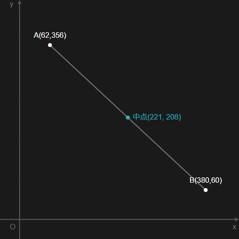

中点
概要

2 点 A,B があるとき、線分 AB 上で、両端からの距離が等しい点のことを中点といいます。
コード例
type Point = { x: number; y: number };
function midpoint(a: Point, b: Point): Point {
const c: Point = { x: 0, y: 0 };
c.x = (a.x + b.x) / 2;
c.y = (a.y + b.y) / 2;
return c;
}
console.log(midpoint({ x: 10, y: 10 }, { x: 10, y: 10 })); // { x: 10, y: 10 }
console.log(midpoint({ x: 10, y: 10 }, { x: 15, y: 10 })); // { x: 12.5, y: 10 }
console.log(midpoint({ x: 10, y: 10 }, { x: 15, y: 15 })); // { x: 12.5, y: 12.5 }
x 軸, y 軸ごとに平均を取り、それを新たな(x, y)にして返却します。
// 一次元の場合
function midpoint(a: number, b: number): number {
return (a + b) / 2;
}
// 三次元の場合
function midpoint(a: Point3d, b: Point3d): Point3d {
const c = { x: 0, y: 0, z: 0 };
c.x = (a.x + b.x) / 2;
c.y = (a.y + b.y) / 2;
c.z = (a.z + b.z) / 2;
return c;
}
二次元以外の場合も、軸ごとに平均を取れば、その次元での中点を求める処理になります。